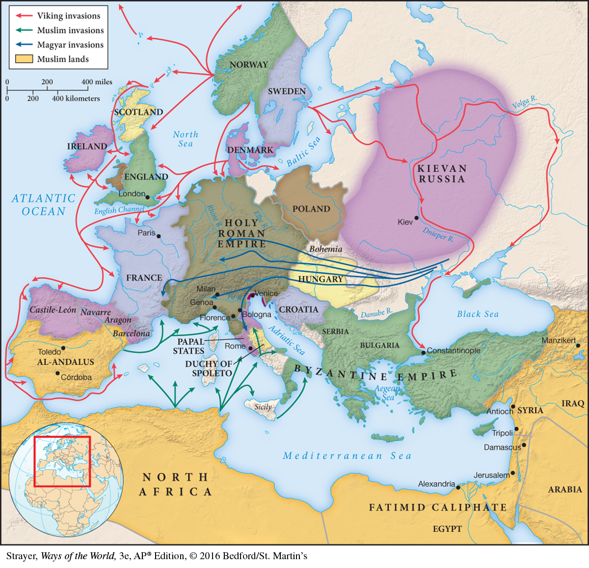

Map 10.3 Europe in the Middle AgesBy the eleventh century, the national monarchies that would organize European political life — France, Spain, England, Poland, and Germany — had begun to take shape. The earlier external attacks on Europe from Vikings, Magyars, and Muslims had largely ceased, although it was clear that European civilization was developing in the shadow of the Islamic world.